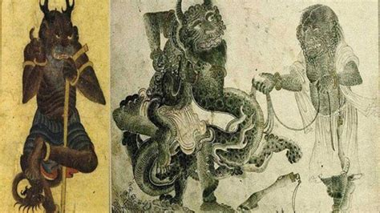

Depending on belief systems, a jinn is a creature of extraordinary abilities who was created by Allah. There are those, however, who believe jinn are simply magical creatures and do not associate them with a creation story.
Inside Islamic tradition, the Jinn are referenced in two different ways. The first is that they are known to be the opposite of al-lns, which is something that maintains a shape. This means it is impossible for a human to detect them with their sensory organs. However, this classification does not just apply to Jinn. It also applies to Angels and Demons. According to the rule, all Demons and Angles are Jinn, but not all Jinn are Angels or Demons
The second way in which Jinn are perceived is as an invisible entity that were created from smokeless fire. These creatures are known to have similar motivations and needs to that of humans. They also eat and drink and have the ability to give birth. They are also subject to a life cycle, although they were able to live much longer than humans. Although they were mostly similar to humans, they were known to be much faster and stronger. Additionally, the Jinn were able to be believers or non believers and were subject to being judged to go to heaven or hell.
Although the majority of humans were not able to see Jinn (unless they chose to be seen), there were a few notable figures in history who are known to have the ability to communicate with these creatures. Islamic tradition tells us that Muhammad (the last prophet of Allah) was sent as a prophet not only to human communities, but to the Jinn as well. There were also other prophets and messengers that were sent to Jinn communities so that they could know Allah and have salvation through him. Surah 72 in the Quran is devoted to the explanation of the Jinn and their existence on earth. It also tells of Iblis – the Islamic equivalent of Satan – who is thought to be a Jinn. Another Islamic prophet (who also appears in Christianity) who was known to have interaction with the Jinn was King Solomon. King Solomon ruled over ancient Israel and was thought to be one of the most wise men in the world. Islamic tradition tells us that he was also a prophet who was given the ability to speak with animals and Jinn. In addition to being able to speak with Jinn, King Solomon also had control over rebellious Jinn. Legend says that this ability gave him the power to make rebellious Jinn build the First Temple and allowed him to learn cures for illnesses that were inflicted on humans by Jinn.